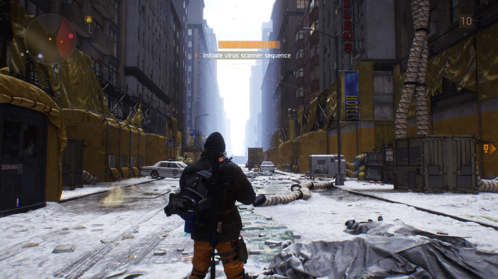
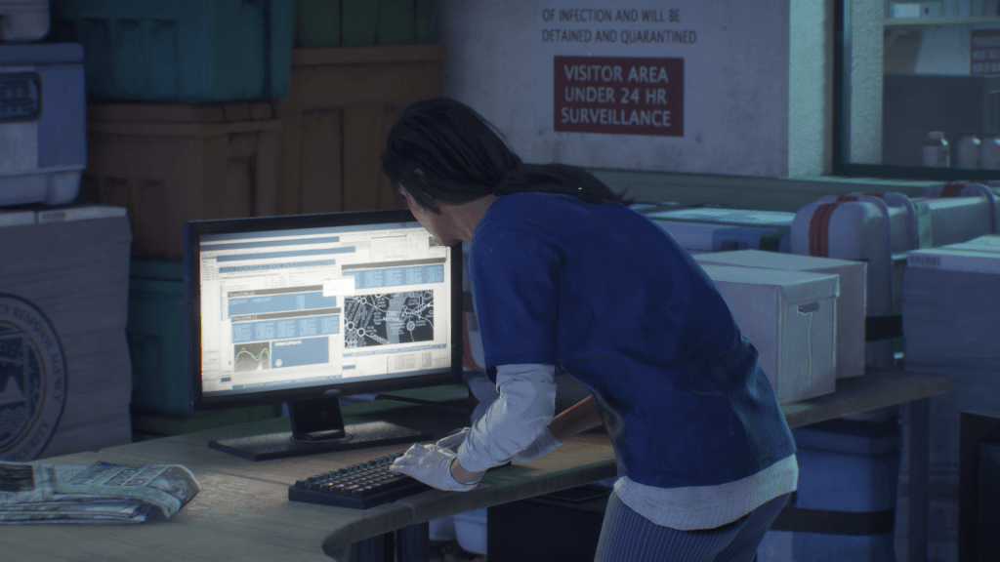
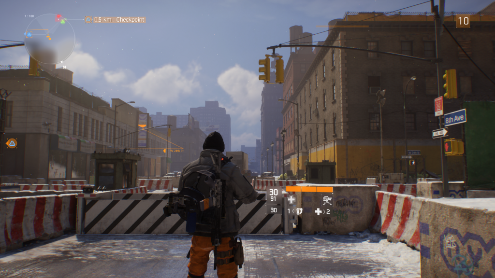
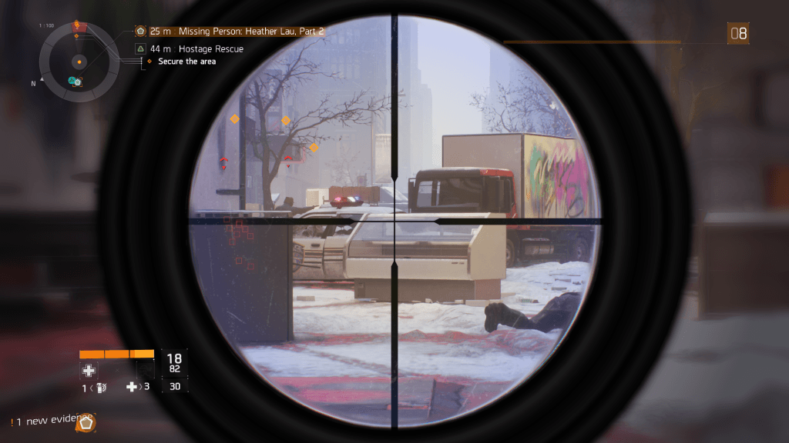
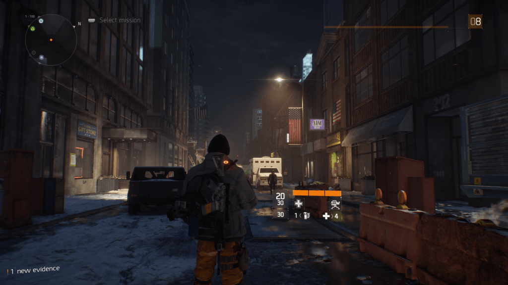
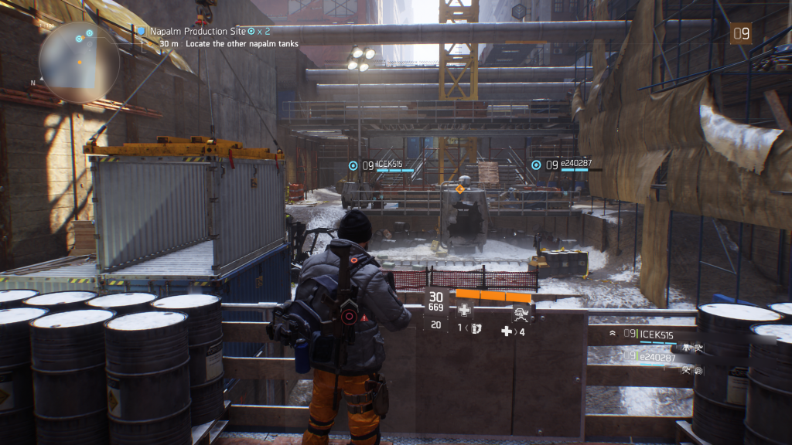

TOM CLANCY'S THE DIVISION
Tom Clancy’s The Division a fost unul dintre acele jocuri care a făcut furori atunci când a fost prezentat de către Ubisoft în cadrul conferinței de la E3 2013. Toți am rămas cu gura căscată și am spus la unison că pentru acest RPG MMO 3rd Person Shooter merită să-ți cumperi o consolă Next-Gen.
Anii au trecut, jocul a suferit câteva amânări, entuziasmul s-a moderat, poate și din cauza unui mic downgrade din punct de vedere grafic, dar a venit martie 2016 și cu toate că lumea era sceptică și pesimistă, Tom Clancy’s The Division a rupt toate recordurile de vânzări pentru un nou IP (Intellectual Property) și până la urmă s-a dovedit a fi un joc excelent.
Personal, consider că Tom Clancy’s The Division este cel mai bun joc de la Ubisoft din ultimii 5 ani și te invit să citești review-ul în continuare pentru a afla de ce susțin acest lucru.
POVESTEA
Povestea din The Division poartă amprenta specifică unui titlu marca Tom Clancy. După un atac terorist, cu arme chimice, realizat la momentul oportun, febra cumpărăturilor de Black Friday, orașul New York este în ruine, cu milioane de cețăteni decedați. Virusul a fost răspândit pe bancnote, oamenii s-au îmbolnăvit și apoi au murit, instituțiile statului au cedat, anarhia a luat locul legii și ca urmare a acestor evenimente, o unitate specială, The Division, a fost activată pentru a încerca să readucă ordinea pe străzile marelui oraș care nu doarme niciodată.

După cum spune și sloganul jocului: When Society Falls, We Rise, care se traduce prin: Noi ne ridicăm atunci când societatea cade, rolul agenților care fac parte din The Division este de a aduce pacea, de a eradica grupurile de huligani, de a ajuta puținii supraviețuitori rămași pe străzi și de a stabiliza cel mai vestit oraș din Statele Unite.

M-am bucurat foarte tare atunci când am văzut câtă atenția a fost pusă în prezentarea poveștii. Mi-a fost teamă să nu fie ceva mediocru, gen The Crew, care să existe doar pentru a lega nişte misiuni. Din fericire, firul narativ din The Division este excelent, cu accentul pus pe lupta pentru supraviețuire și pe diferite episoade dramatice prin care trec cei care încearcă să facă ceva pentru a arăta că umanitatea are puterea de a renaște din cenușă. Povestea este spusă prin secvențe cinematice și conversații prin radio, dar și prin diferite amintiri care se pot descoperi atunci când explorezi.
GAMEPLAY
Echipa de la Ubisoft Massive a creat o mecanică de joc foarte rafinată, aș putea spune chiar, adusă la perfecție. Tom Clancy’s The Division îmbină elemente din mai multe genuri. În primul rând, avem modul de progresie și loot de tip Role Playing Game, apoi mecanicile de shooting și cover specifice unui 3rd Person Shooter și nu în ultimul rând, libertatea de explorare, adusă de cel mai frumos Open World de la Grand Theft Auto V încoace.

The Division oferă o experiență de joc bună atunci când îl abordezi de unul singur, dar cooperativ este unul dintre cele mai bune jocuri din ultima vreme. Chiar îți recomand să-ți cauți încă trei prieteni care îl au și să-l încerci împreună cu ei. Nu cred că-ți va fi prea greu să-ți găseșți coechipieri, deoarece lista mea de PSN este plină de gameri care au lăsat Destiny, FIFA și alte pasiuni și acum îi văd non stop în cel mai nou blockbuster de la Ubisoft.
Progresia personajului se face prin adunarea de experiență, pe care o obținem prin finalizarea cu succes a misiunilor principale și secundare. Putem avansa pe mai multe ramuri, iar nivelul maxim la care putem ajunge este 30, cu rank separat pentru Dark Zone, care poate ajunge la 100.

Loot-ul este foarte important în The Division, pentru că majoritatea armelor și echipamentelor pot fi upgradate și unele din acestea vin chiar cu diferite moduri care pot schimba semnificativ atributele item-ului.
Misiunile sunt destul de diverse, dar după zeci de ore petrecute în joc ne vom lovi de inevitabila repetitivitate. Din fericire, AI-ul este extrem de bun și inamicii ne vor pune mari probleme, ținându-ne mereu cu atenția extinsă la maximum. Aceștia vor comunica între ei, vor face suppressing fire și ne vor flanca permanent. Pentru a reuși, vei fi nevoit să memorezi fiecare schemă de atac a adversarilor și să ai mare răbdare, abordând un stil de joc tactic. Repet, The Division este un RPG și apoi un Shooter.

Dark Zone este partea jocului în care există posibilitatea de a iniția confruntări de tip PvP (Player vs Player). Aici vei putea intra singur sau împreună cu prieteni și vei sta, permanent, ca pe pioneze la gândul că Friendly Fire este On și că oricine poate porni un killing spree fără o atenționare inițială. După ce vei termina povestea și misiunile opționale, sunt convins că vei fi foarte atras de Dark Zone.
GRAFICĂ
Cu mici excepții, Tom Clancy’s The Division este unul dintre cele mai arătoase jocuri Open World disponibile acum pe piață și cu siguranță este cel mai impresionant joc, din punct de vedere estetic, lansat până în prezent de către Ubisoft.
Mărețul oraș New York, chiar și în ruine este fabulos. Atenția la detalii de care au dat dovadă cei din echipa de developement trebuie apreciată. Blocurile abandonate, bulevardele largi, blocate de mașini lăsate de izbeliște și răsturnate, grupurile de supraviețuitori care nu mai țin cont de moralitate, reuşesc să creeze o atmosferă apăsătoare și plauzibilă după o astfel de catastrofă.

Înainte de a trece la concluzie, trebuie să-ți spun câte ceva și despre micile probleme pe care le-am întâmpinat pe parcursul timpului petrecut cu Tom Clancy’s The Division. Am observat câteva bug-uri și glitch-uri. Uneori texturile se încarcă mai greu, dar aceste mici neplăceri nu sunt frecvente și sunt convins că se pot rezolva cu un patch.
CONCLUZIE
Tom Clancy’s The Division este un joc excelent, care m-a ajutat să-mi recapăt încrederea în potențialul celor de la Ubisoft.
Îți recomand să-l încerci, deoarece rar avem posibilitatea de a ne bucura de un pachet atât de reușit. Poveste interesantă, gameplay perfect, prezentare grafică și audio de excepție, zeci de ore de joc, dacă nu cumva sute, și socializare alături de prieteni. Ce poți să-ți dorești mai mult de atât?